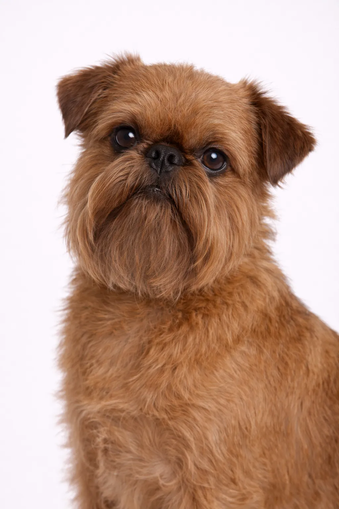

Brusselse Griffon
Klein van formaat maar enorm in persoonlijkheid — de perfecte schoothond.
7-8 in
8-13 lbs
Rasbeoordelingen
Temperament
Overzicht
Met hun bijna menselijk aandoende uitdrukking en grote persoonlijkheid zijn Brusselse Griffons charmante metgezellen. Ze hechten zich sterk aan hun baasjes en kunnen behoorlijk grappig zijn.
Temperament
De Brusselse Griffon staat bekend om zijn waakzaamheid, nieuwsgierigheid en trouwiteit. Vroege socialisatie helpt hem uit te groeien tot een evenwichtige metgezel.
Gezondheid
Over het algemeen gezond met een levensduur van 12-15 jaar. Veelvoorkomende aandoeningen zijn patellaluxatie en tandproblemen. Regelmatige veterinaire controles en preventieve zorg zijn belangrijk. Een gezond gewicht helpt veel gezondheidsproblemen te voorkomen.
Beweging
Matige bewegingsbehoefte met dagelijkse wandelingen en regelmatige speelsessies. Ze genieten van een combinatie van lichaamsbeweging en ontspanningstijd. Interactieve spelletjes en trainingssessies zorgen voor mentale stimulatie. Een vaste beweegingsroutine houdt hen gezond en gelukkig.
⦿ Is Dit Ras Geschikt voor Jou?
✓ Ideaal Voor
- Singles
- Senioren
- Mensen die een toegewijde metgezel willen
✗ Niet Ideaal Voor
- Huizen met jonge kinderen
- Mensen die vaak weg zijn
Ons Oordeel: Met hun bijna menselijk aandoende uitdrukking en grote persoonlijkheid zijn Brusselse Griffons charmante metgezellen. Ze hechten zich sterk aan hun baasjes en kunnen behoorlijk grappig zijn.